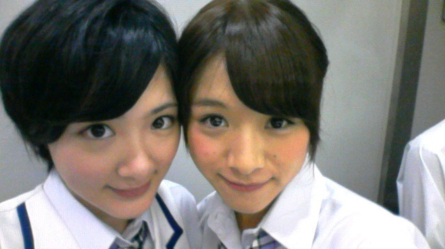

| 2012/07 14 Sat | 大阪全国握手会ヽ( ・∀・)ノ |
今日は大阪にておいでシャンプー最後のっ
最後のっ!!最後のっ!!
全国握手会でしたヽ(・∀・)ノ
暑い中沢山の乃木坂ファミリーの皆さんに集まって頂きました！
すごく楽しかったです

皆さんはどうでしたか!?
生駒はですね、実は東京の全国握手会の時に、ステージで失敗してしまった所があって、だから朝から緊張というかなんかモヤモヤしててね...
でも今回は失敗から学んでより良く出来たのです!!
だからそこは自分の自信にしようと思いました。
あとトークで夏休みの思い出を語るコーナーがあったんよ〜
生駒はほぼ家の中にこもっていました！
だから今年は乃木坂として生駒里奈としてはっちゃけた夏休みを過ごしたいなと思いました！
皆さん

生駒に楽しい思い出を下さいなっ♪
なんてね〜
あと握手!!
今回も沢山の乃木坂ファミリーの皆さんと出来て嬉しかったです!!
足とか痛くないかい？
今度は９月頃に握手会だね〜
生駒は北海道でミニ個別があるから会えるけども、
でもひとまず!!
乃木坂４６
おいでシャンプー全国握手会にお越しくださり本当にありがとうございました！
これからもよろしくお願いいたします!!
来れなかったみなさんヽ(・∀・)ノ
待ってるからね!!
今日レーンが同じだった
みくもってぃと

あとプレイボーイ見てくださってありがとうございます!!
まゆゆさんと撮ったの!!
かわいすぎてもうっ(*ノ▽ノ)
あと今日ジャンプ発売日だよ！
今帰りの新幹線で読んでる!!
叫びはもう少しまとめてから叫びたいと思います

黄瀬くんかっこいい!!
キセキの世代がぁあああああ
ありがとうございました！
ではっ!!
へばなっ!!
コメント(357)
2012/07/14 20:30